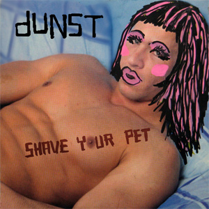

"Shave Your Pet" - Second dunst compilation
03/07 - 2006.

Dennis Agerblad
contributes with 2 songs.
1. - feat. Knud Vesterskov - The Man With The Needle
13. - mAdam feat. Dennis Agerblad - La la la
Download at:
TDC Online Musik
o
r
iTunes
Album 80 kr.
One track 8 kr.
Released by:
Tunga musiK